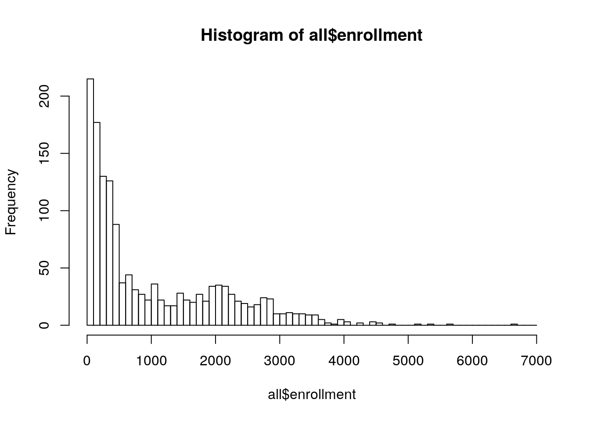
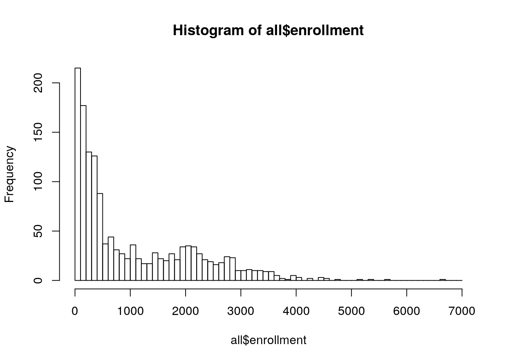
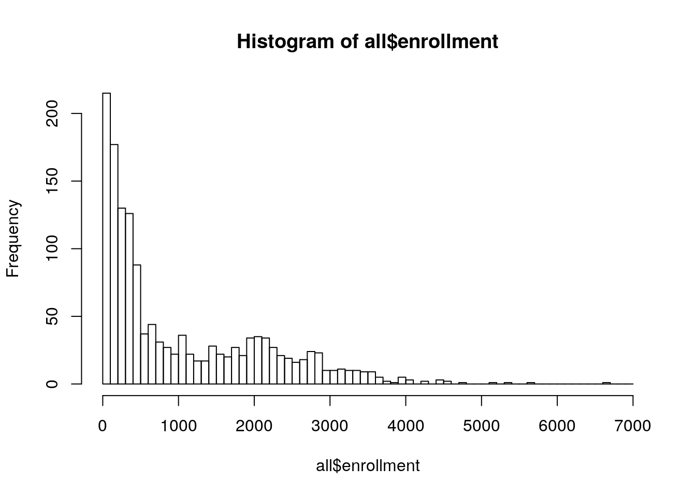

1
Purpose
2
Enrollment from 2018
3
UIL
3.1
Data Source and Prep
3.2
Pass One, All Schools
3.3
Pass Two, Football-Playing Schools
3.4
Distribution of Football-Playing Schools
4
All High Schools
5
Football-Playing High Schools
UIL Enrollment Analysis
Chapter 4
All High Schools

 
